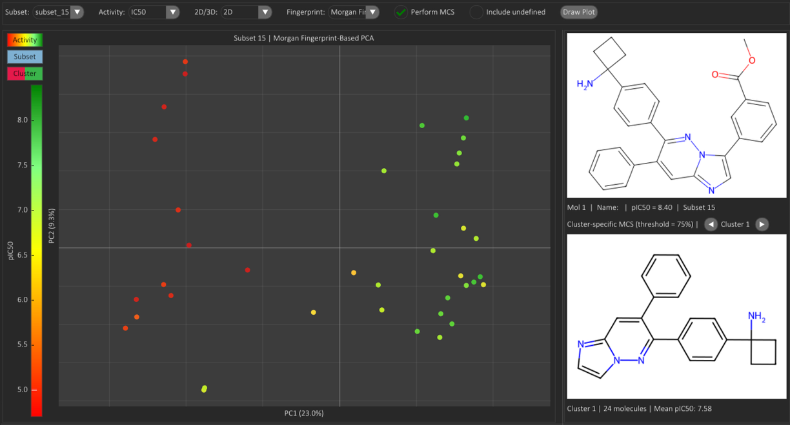

Chemical Space
The Chemical Space tab provides two tools for exploring Descriptors and visualizing Structure-Activity Relationship (SAR) patterns within individual subsets or across the full dataset. Each tool is available in a dedicated sub-tab: Hierarchical Dendrogram, Descriptors & Activity Plot, Structure-Based PCA, Structure-Based UMAP, and Structure-Based t-SNE.
Hierarchical Dendrogram
The Hierarchical Dendrogram organises subsets according to the similarity of their common scaffolds. Each leaf corresponds to one subset, while branch heights reflect the similarity level at which subsets or subset-groups merge into larger structural families.
The red threshold line inside the plot can be moved interactively to change the similarity cut-off used to colour the branches. This makes it possible to inspect how subsets aggregate into broader or more specific structural clusters as the similarity criterion becomes more or less stringent.
The left panel contains the subset selector, allowing the user to include or exclude subsets before drawing the dendrogram and to highlight a specific subset directly on the plot. Selecting a subset in the dendrogram shows its scaffold and summary information in the right-hand panel, supporting direct comparison between cluster position and chemical structure.
Descriptors & Activity Plot
The Descriptors & Activity Plot visualises relationships between two or three molecular variables within a selected subset or across the full dataset. Each axis can represent either a biological activity endpoint or a molecular descriptor. In 3D mode, the plot can additionally use colour to encode a fourth variable.
The user selects:
- Subset to analyse (or the full dataset).
- Dimensionality (2D or 3D).
- Variables to plot on the X and Y axes, and on the Z axis when in 3D mode.
- Point colouring (3D only), to map an additional variable to the colour scale.
Structure-Based PCA
The Structure-Based PCA view is a Principal Component Analysis projection computed from molecular fingerprints in 2D or 3D. Because the model is fingerprint-based, the projection provides a compact representation of structural variability within a subset or across the entire dataset. Clusters of points therefore correspond to groups of structurally similar molecules. Point colour encodes the selected activity value, enabling rapid identification of activity-enriched regions of chemical space.
The user selects:
- Subset to analyse (or the full dataset).
- Activity type (IC50-like endpoints are automatically converted to a logarithmic scale, e.g., pIC50).
- Dimensionality (2D or 3D), corresponding to the number of principal components.
- Fingerprint type used to compute the PCA projection.
Example Analysis

The example shows the analysis performed on Subset 15, selecting IC50 (reported as pIC50) and the Morgan fingerprint. Two clusters are visible, separated primarily along PC1, and display clearly distinct activity levels: all molecules in Cluster 1 show higher activity values than those in Cluster 2, indicating a strong structure-activity correlation within Subset 15.
Structure-Based UMAP
The Structure-Based UMAP view is a non-linear projection of molecular fingerprints into 2D, designed to preserve local neighborhood relationships between structurally similar molecules. Compared with PCA, UMAP is often more effective at revealing compact chemotype clusters, local transitions, and activity-enriched regions that may be hidden in a linear projection. As in the PCA tab, point colour can be switched between activity values, subsets, and automatically derived clusters.
The user selects:
- Subset to analyse (or the full dataset).
- Activity type (IC50-like endpoints are automatically converted to a logarithmic scale, e.g., pIC50).
- Fingerprint type used to compute the UMAP projection.
- Neighbors, Min dist., and Metric, which control how local structure is preserved in the embedding.
In practice, the three UMAP-specific parameters determine whether the plot highlights local compactness within each subset or global separation between different subsets. Since molecules within the same subset usually share a common core, they are expected to occupy nearby regions of the projection. UMAP can either keep these families tightly packed or spread them apart more clearly, depending on how the parameters are tuned.
- Neighbors defines how many nearby molecules are considered when learning the local manifold. Lower values (for example 5 or 10) emphasize very local structure: they often produce tighter, more fragmented islands and are useful when the goal is to separate analog series or to see sub-clusters inside the same subset. Higher values (for example 25 or 50) smooth the embedding and preserve broader organization better, which is usually preferable when you want to visualize how multiple subsets relate to one another across the whole dataset.
- Min dist. controls how close projected points are allowed to sit to each other. Lower values such as 0.0 or 0.1 produce dense, compact clusters and make it easier to see sharply separated groups of related molecules. Higher values such as 0.5 or 0.8 force more empty space between points and are useful when clusters are visually overcrowded and you want to inspect internal gradients, for example activity trends within a subset.
- Metric defines how molecular fingerprints are compared before projection. For binary fingerprints, Jaccard is usually the most natural choice and often gives the clearest chemistry-driven neighborhoods. Cosine can be useful when relative overlap matters more than exact bit matching, while Euclidean or Manhattan tend to be less chemically intuitive for sparse binary fingerprints but can still be informative depending on the fingerprint type.
As a rule of thumb:
- To separate subsets well across the full dataset, start with Neighbors = 25-50, Min dist. = 0.3-0.8, and Metric = Jaccard.
- To see compact local groupings inside one subset, start with Neighbors = 5-10, Min dist. = 0.0-0.1, and Metric = Jaccard.
- To visualize internal activity gradients within a subset that already forms a tight cloud, try keeping Neighbors moderate and increase Min dist. so the points spread enough to make the colour pattern easier to read.
Structure-Based t-SNE
The Structure-Based t-SNE view is a non-linear 2D embedding of molecular fingerprints that emphasizes local similarity patterns and separation of nearby chemical series. It is particularly useful for visually isolating analog groups, dense local neighborhoods, and fine-grained structural families. Because t-SNE prioritizes local relationships, the relative distances between far-apart clusters should be interpreted more cautiously than in PCA.
The user selects:
- Subset to analyse (or the full dataset).
- Activity type (IC50-like endpoints are automatically converted to a logarithmic scale, e.g., pIC50).
- Fingerprint type used to compute the t-SNE projection.
- Perplexity, Learning rate, Iterations, and Metric, which control neighborhood balance and optimization of the embedding.
t-SNE is usually even more focused than UMAP on local neighborhood structure. This makes it very effective when the goal is to separate close chemotypes or to highlight fine-grained organization inside families of molecules sharing the same core. At the same time, it is more sensitive to parameter choice, so different settings can visibly change the compactness, spacing, and stability of the final plot.
- Perplexity can be interpreted as the effective neighborhood size used by t-SNE. Lower values such as 5 or 10 focus strongly on local structure and often split the embedding into many compact islands, which is helpful for separating analog series or subfamilies within subsets. Higher values such as 30 or 40 smooth the layout and reduce fragmentation, which is usually better when you want a more coherent overview of many subsets together.
- Learning rate controls how aggressively the embedding moves during optimization. Low values may compress points too much or converge slowly, while excessively high values can make the map unstable or overly scattered. In most cases auto is a safe starting point; fixed values such as 100 or 200 can be useful if you want to compare repeated runs more consistently.
- Iterations determines how long optimization runs. Lower values are faster but can stop before the embedding stabilizes, while higher values usually yield cleaner separation and more regular cluster shapes. If the plot looks noisy, partially collapsed, or still changing a lot between runs, increasing the number of iterations is often the first thing to try.
- Metric defines how fingerprint similarity is measured before t-SNE constructs the 2D map. For typical binary molecular fingerprints, Jaccard would often be the chemically most intuitive choice, but in this implementation the main available alternatives are Euclidean, Cosine, and Manhattan. Among these, Cosine often gives more chemically interpretable neighborhoods than Euclidean for sparse fingerprint-like vectors.
As a rule of thumb:
- To separate local groups inside subsets, start with Perplexity = 5-10, Learning rate = auto, and Iterations = 2000-4000.
- To obtain a smoother overview of many subsets, start with Perplexity = 20-40, Learning rate = auto, and Iterations = 1000-2000.
- If points from the same subset form one very dense blob and you want to understand its internal organization better, lower the Perplexity and increase the Iterations.
- If the projection appears unstable or overly fragmented, increase the Perplexity and keep the Learning rate on auto before changing other settings.
When to Use PCA, UMAP, or t-SNE
Although PCA, UMAP, and t-SNE are all used in SARgate to project fingerprint-based molecular representations into low-dimensional spaces, they are not equivalent and should be interpreted as complementary views of chemical space rather than interchangeable methods.
PCA is a linear projection method. It preserves global variance structure and is therefore the easiest of the three methods to interpret at the whole-dataset level. When the objective is to compare broad structural trends across many subsets, or to verify whether activity gradients align with the dominant directions of structural variability, PCA is usually the most robust starting point. It is also the preferred method when a more reproducible and globally interpretable map is needed.
UMAP and t-SNE are non-linear methods that focus more strongly on neighborhood preservation. They are therefore often more informative when the goal is to reveal compact chemotype clusters, local transitions, or fine-grained subgrouping that may be hidden in a linear PCA projection. In SARgate, this becomes particularly relevant when analysing single subsets, since subsets are already structurally homogeneous by construction and consist of molecules sharing the same core scaffold. In this scenario, non-linear methods can be more effective than PCA at exposing subtle internal organization driven by R-group substitutions.
Between the two non-linear methods, UMAP is generally more suitable when the user wants a balanced view that still retains part of the broader organization of the data. For example, when analysing the entire dataset, UMAP can often separate subsets or chemotype families while preserving a useful intermediate-scale structure across the whole map. t-SNE, in contrast, is usually more aggressive in emphasizing very local structure. It is therefore particularly useful when the user wants to resolve small analog series, subtle subgrouping inside a single subset, or local SAR discontinuities within a set of molecules sharing a common core.
As a practical rule in SARgate:
- Use PCA first when analysing the full dataset and you need a stable, globally interpretable structural overview.
- Use UMAP when you want to inspect both subset-level separation and local structural neighborhoods in the same map.
- Use t-SNE when the main goal is to inspect local organization inside one subset or to resolve fine-grained structural families among molecules that already share a common scaffold.